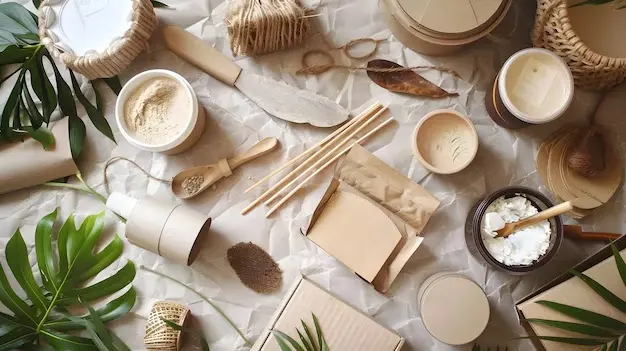
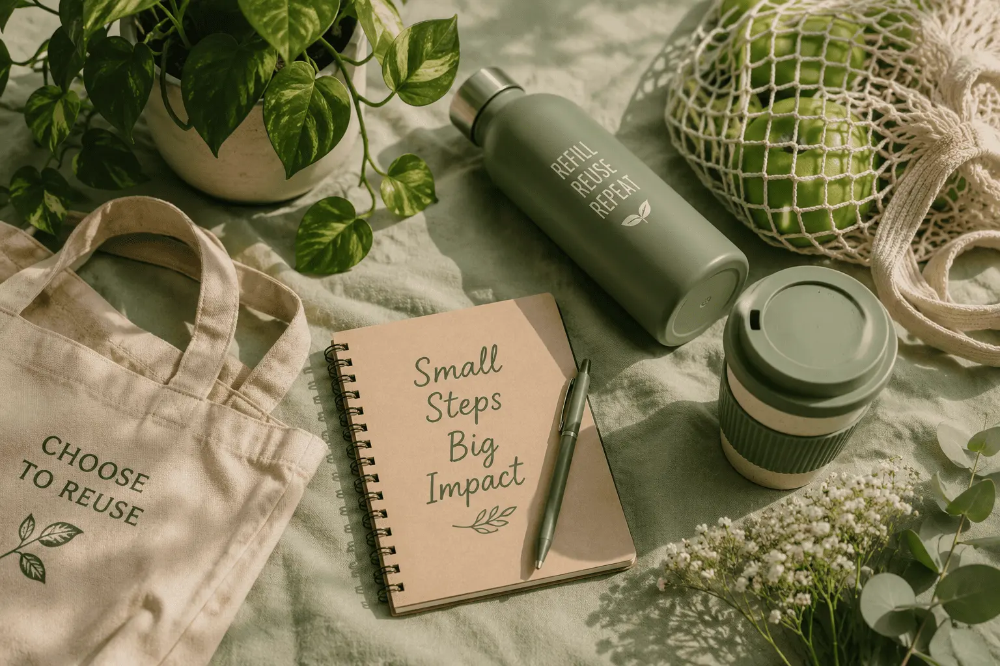
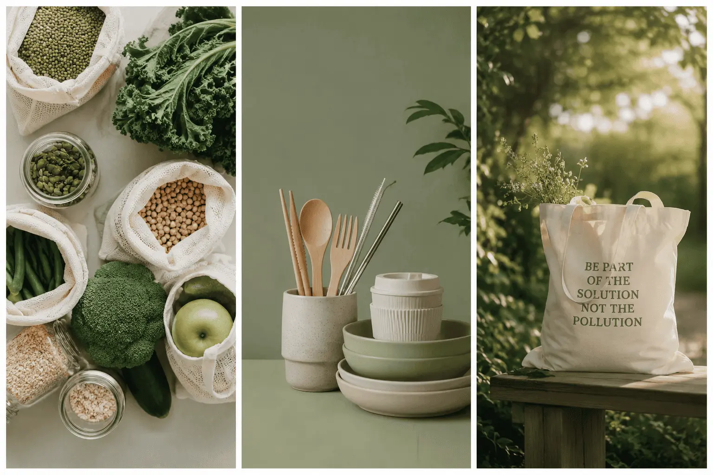

01Refuse & reduce
Pause before purchasing, avoid unnecessary packaging and choose only what you genuinely need.
FED Individual Project / Singapore Polytechnic / 2026
A personal exploration of how thoughtful consumption, everyday reuse and better recycling habits can move us towards a lower-waste future.

01Choose with intentionBuy what adds genuine value.
02Keep materials in useReuse before replacing.
03Dispose responsiblySort and recycle correctly.
Context / Singapore

In land-scarce Singapore, reducing waste helps conserve resources, lower pollution and extend the lifespan of Semakau Landfill and our waste-management infrastructure.
A zero-waste lifestyle is not about becoming perfect overnight. It is about noticing what we consume, refusing what we do not need and making small decisions that are realistic enough to become habits.
Read the Zero Waste SG overview ↗The practice / Start where you are
Sustainable living becomes more achievable when broad intentions are translated into specific choices we can repeat every day.

01Pause before purchasing, avoid unnecessary packaging and choose only what you genuinely need.
Carry reusable essentials and give existing items a longer, more useful life before replacing them.
 03
03
Separate suitable materials, keep recyclables clean and learn what belongs in the recycling stream.
Local perspective / Learning from action
Singapore's offshore landfill is a reminder that disposal still has a physical destination. Reducing what reaches it helps protect limited landfill capacity for the future.
Reusable containers, bottles and bags make lower-waste behaviour visible, practical and easier for communities and businesses to normalise.
The idea I am taking forward
“Sustainability is not a single perfect decision. It is the quiet power of choosing better, again and again.”See my personal actions ↗
References / Continue learning